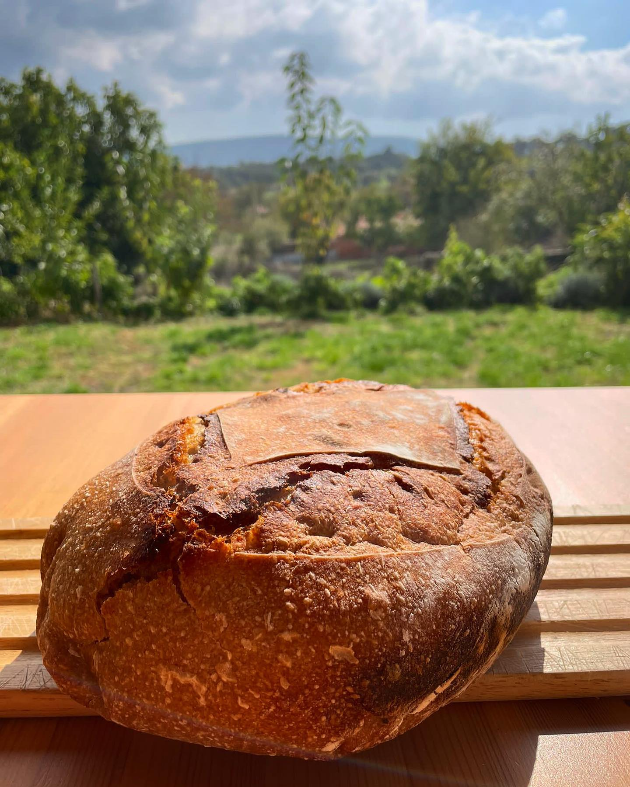
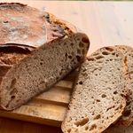
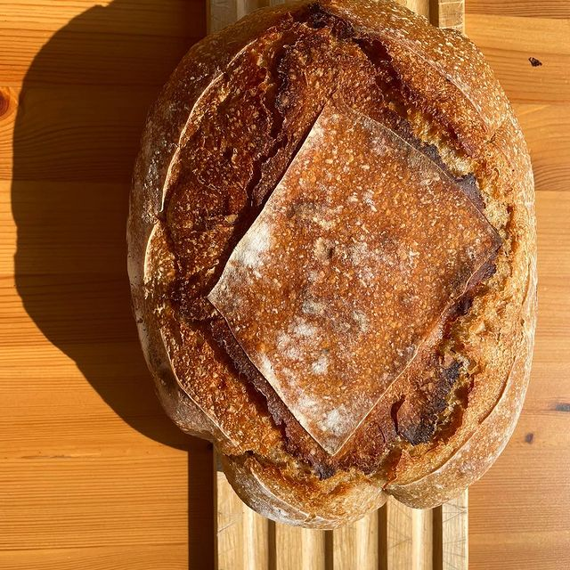

Home
Sarımsaklı Ekşi Mayalı Ekmek
  
Orta Asya kökenli ve en az 5000 yıldır #sebze ve #tıbbi amaçlarla kullanılır.
Faydaları
B1, B2, C vitaminleri içerir.
enfeksiyonlar a karşı korur.
kalp ve damar hastalıklarına iyi gelir.